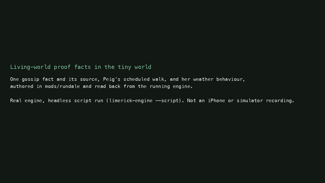

Living-world proof facts in the tiny world
Issue 2195. The recording is a headless run of the real engine (limerick-engine --script) on the Rundale mod. It is not an iPhone or simulator recording.

- A new game holds one gossip fact, known to its source (Micheal) alone.
- In clear weather Peig is on the village road at 08:00; in heavy rain she is at the Letter Office.
- Gossip propagation is checked by
world_sheet.rson the shared world pump, not shown here; the headless script does not run gossip ticks.